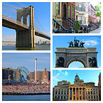
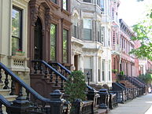
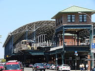

The most populous of New York City's five boroughs, with a Census-estimated 2,621,793 people in 2014.[1] It is geographically adjacent to the borough of Queens at the western end of Long Island. Since 1896, Brooklyn has had the same boundaries as Kings County, the most populous county in the State of New York and the second-most densely populated county in the United States, after New York County (Manhattan).[2] With a land area of 71 square miles (180 km2) and water area of 26 square miles (67 km2), Kings County is the fourth-smallest county in New York State by land area and third-smallest by total area, though it is the second-largest among New York City's five boroughs.[3] Today, if it were an independent city, Brooklyn would rank as the fourth most populous city in the U.S., behind only the other boroughs of New York City combined, LA and Chicago.
Neighborhoods
Brownsville had a majority of Jewish residents; since the 1970s it has been majority African American. Midwood during the early 20th century was filled with ethnic Irish, then filled with Jewish residents for nearly 50 years, and is slowly becoming a Pakistani enclave. Brooklyn's most populous racial group, white, declined from 97.2% in 1930 to 46.9% by 1990.[41]With gentrification, many of Brooklyn's neighborhoods are becoming increasingly mixed, with an influx of immigrants integrating its neighborhoods. What started as a trend may now be the permanent equilibrium. Brooklyn and Queens have been a worldwide example of poor immigrants getting along most of the time, often with better results than in their home countries. Presently, they have substantial populations from many countries. The borough also attracts people previously living in other cities in the United States. Of these, most come from Chicago, Detroit, San Francisco, Washington, D.C., Baltimore, Philadelphia, Boston, Cincinnati, and Seattle.[43][44][45][46][47][48][49]
"Brooklyn contains dozens of distinct neighborhoods, representing many of the major ethnic groups found within the New York City area. The borough is home to a large African American community. Bedford-Stuyvesant is home to one of the most famous African American communities in the city, along with Brownsville, East New York, and Coney Island. "Bed-Stuy" is a hub for African American culture, often referenced in hip hop and African American arts.[citation needed] Brooklyn's African American and Caribbean communities are spread throughout much of Brooklyn."
Brooklyn is also home to many Russians and Ukrainians, who are mainly concentrated in the areas of Brighton Beach and Sheepshead Bay. Brighton Beach features many Russian and Ukrainian businesses. Because of the large Ukrainian community, it has been nicknamed "Little Odessa". However, recently, it has been renamed to "Little Russia" because of the overwhelming presence of the Russian population. Originally these were mostly Jews; however, it is now the non-Jewish Russian and Ukrainian communities of Brighton Beach that represent various aspects of Russian and Ukrainian culture.
Bushwick is the largest hub of Brooklyn's Hispanic American community. Like other neighborhoods in New York City, Bushwick's Hispanic population is mainly Puerto Rican, with many Dominicans and peoples from several South American nations as well. As nearly 80% of Bushwick's population is Hispanic, its residents have created many businesses to support their various national and distinct traditions in food and other items. Sunset Park's population is 42% Hispanic, made up of these various ethnic groups. Brooklyn's main Hispanic groups are Puerto Ricans, Mexicans, Dominicans, and Panamanians; they are spread out throughout the borough. Puerto Ricans and Dominicans are predominant in Bushwick, Williamsburg, and East New York, while Mexicans are predominant in Sunset Park and Panamanians in Crown Heights.Italian Americans are mainly concentrated in the neighborhoods of Bensonhurst, Dyker Heights, Bay Ridge, Bath Beach, Williamsburg, East Williamsburg, Cobble Hill, Carroll Gardens, Bergen Beach, and Mill Basin where there are many Italian restaurants, bakeries, deli's, and pizzerias.
Transportation
Coney Island – Stillwell Avenue subway station
Brooklyn features extensive public transit. Eighteen New York City Subway services, including the Franklin Avenue Shuttle, traverse the borough. Approximately 92.8% of Brooklyn residents traveling to Manhattan use the subway, despite the fact that some neighborhoods like Flatlands and Marine Park are poorly served by subway service. Major stations, out of the 170 currently in Brooklyn, include:
Atlantic Avenue – Barclays Center
Broadway Junction
DeKalb Avenue
Jay Street – MetroTech
Coney Island – Stillwell Avenue
Brooklyn was once served by an extensive network of streetcars, many of which were replaced by the public bus network that covers the entire borough. There is also daily express bus service into Manhattan. New York's famous yellow cabs also provide transportation in Brooklyn, although they are less numerous in the borough. There are three commuter rail stations in Brooklyn: East New York, Nostrand Avenue, and Atlantic Terminal, the terminus of the Atlantic Branch of the Long Island Rail Road. The terminal is located near the Atlantic Avenue – Barclays Center subway station, with ten connecting subway services.
Gallery

Brooklyn Bridge, Brooklyn brownstones, Arch, Brooklyn Borough Hall, Coney Island

Landmark 19th-century rowhouses on tree-lined Kent Street in Greenpoint Historic District

Coney Island – Stillwell Avenue subway station